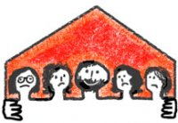

|
|
|
Browsing
Contact Us |
Campaigners |
Face to Face |
Tribune |
Interview |
News |
On the Web |
One Million |
Report
Farsi | Français | German | Italian | Spanish | العربية Also in this section
|
 A Report on Polygamy and Underage Brides in Zahedan* O Woman! Rise up againBy: Mahboube Hosseinzadeh Monday 28 April 2008 Translated by: SZ She says: "I come from a town where a husband can divorce his wife by throwing three pebbles on the ground; without registering the divorce and without any rights or recompense for the wife. I come from a town where eleven-year-old girls are given in marriage to men much older than themselves or even become one of the multiple wives of men who are older than their grandfathers. And all of this is forced on them by their fathers. I come from a town where once a man with four wives decides to marry a fifth woman, he divorces one of his four wives. There’s not even an unwritten law to stop him. And again, the woman has no rights or recompense." The frequent repetition of the phrase "women who have no rights" leads us not only to her town but to a region where women, girls and children are victims of both discriminatory laws and putative and traditional discriminations. Children of Iranian women married to Afghan men are not issued identity cards The presence of child street vendors is the first thing that attracts one’s attention in the main alleys and byways of this town and then on the streets of the outlying areas of Zahedan. In one of the alleys, two boys and a little girl are using a pocketknife to cut a piece of fabric to decorate their hand cart so that they could put a few petty items on it to sell. In one of the famous slums of Zahedan known as Shirabad which also has a large population, there are many children sitting next to white containers full of gasoline or carrying these containers with great difficulty and running towards cars to sell the drivers gasoline. "Ten to twelve years old." Most of them are in this age group, but when we ask them about school, they all say they don’t go to school and cannot read or write either…. The same is also true of another boy wearing blood-stained clothes, plucking chickens at a stand that sells live chickens in the local makeshift bazaar, put up with stakes and planks and housing only a few carts full of goods for sale. And the same is also true of yet another boy there selling salted chickpeas. Later, after talking to locals, we find out that most of the children in this area do not have identity cards. We find the reason for this yet later, and of all places at a meeting with the Director General of the Sistan and Baluchistan Province Registry Office. He said: "In Sistan and Baluchistan many couples live together by marrying in a traditional way but without ever registering their marriage. According to 2004-2005 statistics, more than 40% of children born in this province are born to parents whose marriage was never registered." Rohani attributes this to the dominance of the tribal and traditional culture. And when he tells me about all efforts by his office to get people identity cards and register their marriages, I ask about the condition of these children by putting him on the spot. He answers nonchalantly: "These children are the offspring of the marriages between Iranian mothers and Afghan fathers, and because they are not considered Iranian citizens, they cannot get identity cards, either!!!" Marriage at the age of ten to eleven It is said that in the slums of Zahedan, there are many houses where several families each occupy a single room in a house. There was an opportunity for us to enter one of these houses. The mother, sister, wife, sister-in-law, father and two brothers of the man who has asked us to go in, as well as several little children all live in a single room. One of the women is 27 and has a 12-year-old son as well as a little girl who is only a few months old. When I ask her at what age she got married, she replies: "At the age of 10!!!" And later other people tell me that in some of the towns in this region 10 to 11 is indeed the usual age of marriage. Even if they were to formally register their marriages, the law would still not put a stop to the marriage of a ten-year-old girl who undoubtedly has no concept of love and choice, not to mention any concept of marriage itself. Article 1041 of civil law says: "Marriage of girls at the age of 13 and boys at the age of 15 is contingent upon the permission of the male guardian (father or paternal grandfather) or at the discretion of the court." The statistics that were published, perhaps unintentionally, not only did not cause any worries among the authorities, but they confirmed the legitimate and appropriate use of this law!!! The official statistics of the National Youth Organization reported of 30,000 married Iranian youth between the ages of 10 to 14. 24650 of these married individuals were girls under 14 years of age. (The statistics were released in September 2007 but are actually 2004-2005 numbers.) Some of the members of the Majlis (Parliament) declared these statistics inaccurate, but a few days later a news item appeared on the outbound desk of one of the wire services which substantiated the accuracy of the said statistics. Even though the news item was removed from the outbound desk of the wire service after an hour, the fact that it referred to new statistics that were presented by the representative of the Judiciary Branch at the meeting of the Women’s Social-Cultural Council was yet another corroboration of the problem of child marriages in Iran. These statistics report of 42213 cases of courts issuing decrees certifying that children had reached puberty so that these children could get married. Nasrin Sotoudeh, an attorney-at-law, says: "According to the civil law of Iran, the minimum age of marriage for girls is 13 years old and for boys it is 15 years old. However, by going to court and requesting the judge to issue a decree to certify that the child has reached the age of puberty, the judge asks the child a few questions and then issues the decree of puberty, thus allowing the child to marry." Ms. Sotoudeh does not consider the issuance of the decree of puberty as something related only to marriage and says: "Sometimes the courts are requested to issue a decree of puberty so that the child can make a decision as to whether the mother or father should have his/her custody. Furthermore, sometimes a decree of puberty is sought so that the child can carry out financial transactions." Of course the statistics presented at the Women’s Social-Cultural Council by Bodaghi, the representative of the Judiciary, was related to the cases involving family issues, therefore it does not include requests for issuance of decrees of puberty to carry out financial transactions. When I get hold of one of the members of Majlis (Parliament), and a woman at that, who is also a member of the Judicial-Legal Committee, I ask her: "Hasn’t the time come to think about changing this law? Doesn’t marriage at the age of ten deprive of girl of one of her most basic rights, namely the right to get an education? This is despite the fact that elementary education is mandatory. And of course the president has recently approved that education up to high school level is mandatory and parents who do not comply with the requirement will be fined. And can a ten-year-old girl who hasn’t reached mental maturity assume the responsibility of taking care of a family?" She answers nonchalantly: "There are girls who understand as much as a 20-year-old woman at the age of ten or eleven." And when I say that marriage is not certainly the choice that these children would make and the law should protect them and stop these kinds of marriages, she says: "The families should not force their children to marry, so again this does not have anything to do with the law. This problem should be addressed by promoting culture. And you go and promote culture." Struggle for change; change to achieve equality But in a region where we heard people using the term "buying a wife", not even "getting a wife" instead of marrying, there are young people who can’t stand all this discrimination against women anymore. They are trying to improve the situation by providing information to men and women. I got an opportunity to get to know them in person. Most of them were boys, fewer of them were girls and all of them were young. While we were discussing discriminatory laws against women, they all said that the women in this region suffer under the double whammy of discriminatory laws as well as well as putative and traditional discriminations. I asked one of them who was wearing a Balouchi costume about divorce. She said: "The elders of the tribe or the neighborhood gather and make a judgment on the issue. Most women don’t talk about these issues and cannot defend themselves. If the elder orders a divorce, the husband throws three pebbles on the ground and the wife will be divorced three times, meaning that the divorce is irrevocable." In such cases, women do not receive any dowry or alimony because before the marriage the family of the bridegroom pays the bride’s father some money. I asked: "What if a woman wants to get a divorce?" They answered: "Men have the exclusive right to divorce and only men can divorce women." Again there was talk of discrimination, and the same issues that had been the motive for our trip to this town were repeated over and over. Most of the young people who were talking with distress about the suffering of women in this town, had come here to study. But the enormity of the discriminations had not allowed them to remain indifferent towards the suffering of women whose only response to all these discriminations is prostration and patience. A girl living in another town in this province said with distress: "Here they answer women’s insistence on achieving their demands by death. There are girls in some families who, if they talk about continuing their education - not to mention saying no to forced marriages - will be killed. What should we do under such conditions?" What should we do under the conditions of extensive poverty and the lack of resources, when girls will be threatened with death if they want to continue their education? And in the capital, other girls will be sent to prison for their struggles to change discriminatory laws. Which laws provide us with support to advocate for these women? These young people were the members of the One Million Signatures Campaign. These were young people to whom changing the deplorable condition of women and children whose suffering under extensive discrimination cannot be ignored easily was more important than reaching the goal of collecting one million signatures. We talked about the awareness which is supposed to become a collective demand and act as an element of changing the laws that discriminate against women. I said and they said of the difficult path ahead and of the seed of awareness which despite all difficulties is supposed to sprout in the hearts of women and men in the alleys and byways of the remote neighborhoods in far away towns all over the province of Sistan and Baluchistan. And finally the day will come when the bare-footed children of the alleys and byways of Zahedan will know an anthem to sing - one of those anthems that we all learned at school - instead of being discriminated against because they are the offspring of Iranian women and Afghan men and not being able to get an identity card and go to school…. The day will come when the ten-year-old little girls, instead of forcibly being sent to the house of husbands, will walk to school hand in hand. Maybe on such a day these little girls will murmur the anthem they remember learning from their mothers, the anthem that says: "O woman! Rise up again…." *Dedicated to Mariam Hosseinkhkh who was supposed to accompany me on this trip and help me with this report [but was unable to do so due to her own detention] … |